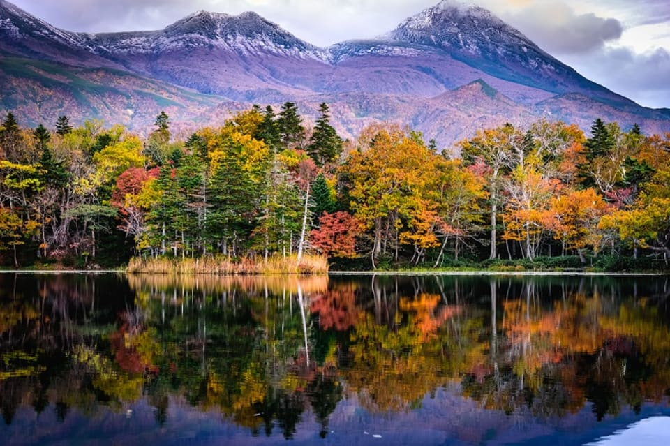
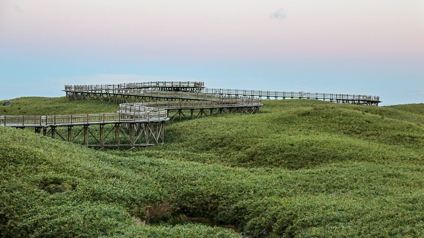
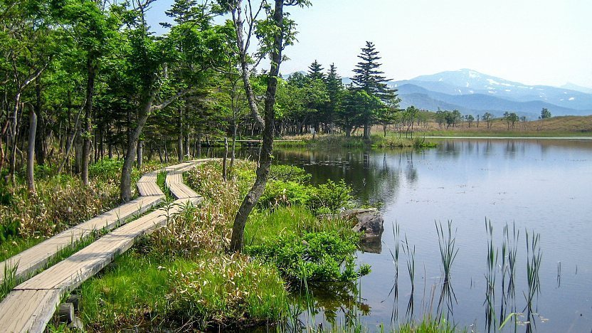

Shiretoko Five Lakes
Hokkaido
Description
Five lakes, formed by the fingertips of a god!
The Shiretoko Five Lakes is located in the town of Shari in Hokkaido. Legend has it that the Shiretoko Five Lakes were formed when a god dug their fingertips into
the ground of the UNESCO World Heritage Shiretoko Peninsula,a region blessed with idyllic natural beauty. But scientifically speaking, a set of five small lakes are
formed long ago by the eruption of nearby Mount Io and fed by underground springs. Each year Hokkaido sees the autumn colors before anywhere else in Japan, and if you visit the Shiretoko Five Lakes
from around late September to mid-October, you can expect to find yourself surrounded by the rich reds and yellows, and gold colors of autumnal foliage,
undisturbed by human hands. Venture out across the elevated wooden walkways and forest trails for stunning views of the vivid autumnal scenery reflected in the
mirror-like surfaces of the lakes. If you’re lucky, you may even catch a glimpse of some of the local wildlife, such as squirrels and deer!
Some of the speacial things to see there are:
- 
Elevated boardwalk
- It is an 800 meter long which was recently built from the parking lot to the first lake, which allows visitors to enjoy views of the lake, the Sea of Okhotsk and the surrounding mountains
without damaging the fragile ecosystem.
- 
Nature Trails
- The nature trails can be walked on an individual basis without guides; however, there is a short lecture, an admission fee of 250 yen per person and a limit on how many hikers can enter.
There are two, one-way hiking courses: a three kilometer (90 minute) course to all five lakes and a 1.6 kilometer (40 minute) course to just the first and second lakes. Note that some
or all of the trails may get closed in case of bear sightings.
Transportation and Cost
By Car
From Utoro, take the main road into the national park for about five kilometers until you reach the Shiretoko Nature Center. Turn left and drive for about
ten kilometers until you reach the parking lot(500 yen parking fee) of the Shiretoko Five Lakes visitor center at the end of the paved road.
By Bus
Shari Bus operates infrequent buses between JR Shiretoko Shari Station and the five lakes (85 minutes, 2000 yen one way) from late April to October.
Additional buses operate between Utoro and the five lakes (25 minutes, 700 yen).
Entrance Fee and Hours
Entrance Fee
For adults the entrance fee is ¥500 whereas the fee for the group is ¥400.
The children of age 12 and below are free to enter the park of Shiretoko National Park.
Hours
Spring/Summer
Month:April 20th- October 20th
Time:8:00-17:30
Autumn/Winter
Month:October 31st-April 19th
Time:9:00-16:00
Off Hours
December 31st
 Shiretoko Goko National Park
Shiretoko Goko National Park